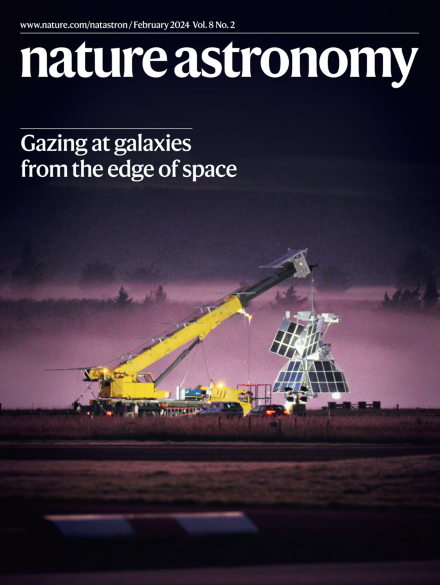

About
Dark matter

Gravitational lensing
Similar to an optical lens, a gravitational lens bends light from a distant source as it travels towards the observer. When the distortions are visible, we refer to this phenomenon as strong gravitational lensing.

SuperBIT
The Super-pressure Balloon-borne Imaging Telescope, also known as SuperBIT, is a highly-stabilized, high-resolution telescope that operates in the stratosphere via NASA's super-pressure balloon system. At 40 km altitude above sea level, the football-stadium-sized balloon carries SuperBIT to a suborbital environment above 99.2% of the Earth's atmosphere in order to obtain space quality imaging. As a research instrument, SuperBIT's primary science goal is to provide insight into the distribution of dark matter in galaxy clusters and throughout the large scale structure of the Universe.
Cosmological simulations